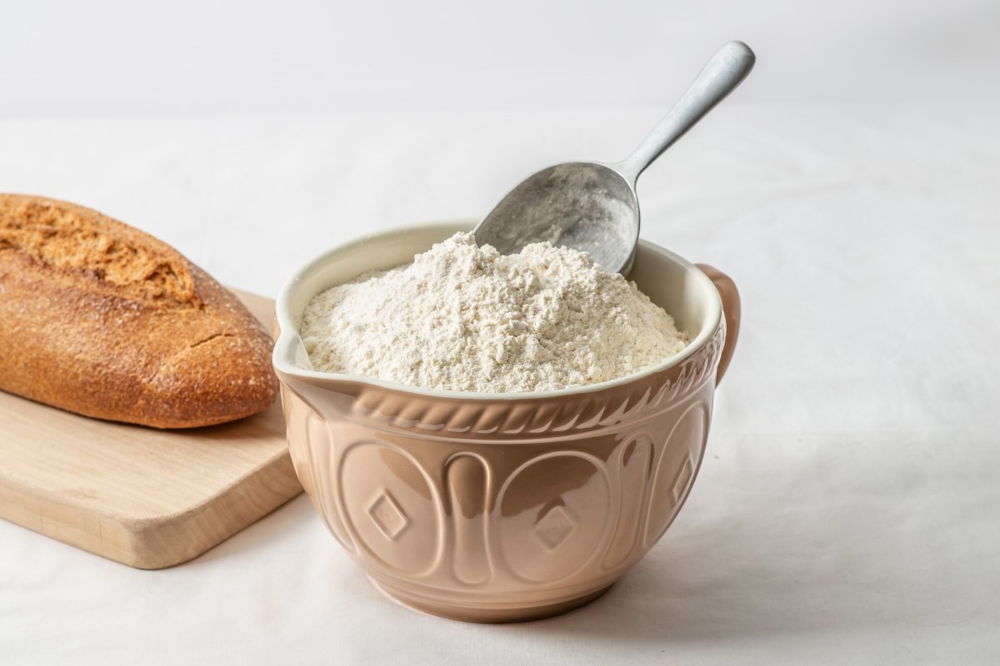

Frixuelos Asturianos tradicionales

Ingredientes:
- 200.gr harina

- 4 huevos
- 500 ml. leche entera

- Ralladura de 1 limon
- 1 cuchara de Azucar

- Una pizca de sal

- Azucar para espolvorear
- Aceite de oliva extra

Pasos:
- En un bol batimos los huevos y añadimos las dos cucharadas de azúcar.
Continuamos batiendo hasta que este se haya integrado. Incorporamos la leche, una pizca de sal y la ralladura
de limón. Volvemos a batir para mezclar bien los ingredientes.
- Añadimos la harina, poco a poco, al tiempo que seguimos vamos incorporándola con la ayuda de unas
varillas.
Dejamos la masa en reposo durante unos 30 minutos. Así conseguimos que la harina abra, y nos quede una
textura como de crema ligera.
- La cantidad de frixuelos resultante dependerá del tamaño de la sartén que vayamos a utilizar. Yo he
usado una sartén pequeña, de unos 20 cm. de diámetro. Añadimos una gota de aceite a la sartén y, con un papel
de cocina,lo extendemos por toda la superficie de la base.
- Con una gotita es suficiente, sólo tenemos que cubrir la superficie con una finísima capa. No es
necesario una crepera, sólo una sartén normal que sea antiadherente, si no lo es, no podréis hacer los frixuelos
porque se romperán al darles la vuelta.
Pasos para el cocinado:
- Cuando la sartén esté caliente añadimos una porción de la mezcla e, inclinando la sartén hacemos que
cubra toda la superficie de la base de la sartén. La cantidad para una sartén pequeña es, más o menos, un poco más
de la mitad del volumen de un cucharón de cocina
- Dejamos, a temperatura medio alta, que se vaya haciendo el frixuelo. Cuando vemos que los bordes
empiezan a despegarse o tostarse, le daremos la vuelta y dejamos que se cocine 30 o 40 segundos más. A medida que
los vayáis preparando veréis el punto en el que está listo de forma muy fácil, no os preocupéis.
- Vamos colocando los frixuelos en un plato y espolvoreándolo con azúcar a medida que los vamos haciendo.
Colocando unos sobre otros. Repetimos la operación, mojando la sartén con una nueva gota de aceite cada vez que os
pongamos con un nuevo frixuelo.
- La forma tradicional de comerlos es enrollándolos y es aconsejable que estén calientes. Con muy poco
trabajo tendremos lista una bandeja para disfrutar de este estupendo dulce asturiano.